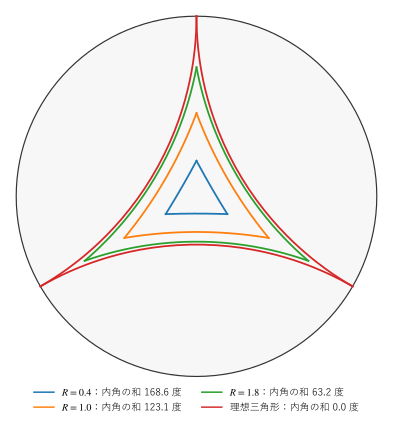

第 6 章 双曲三角法と面積
この章では、双曲平面の三角形の辺と角の関係（双曲三角法）と、三角形の面積を扱う。ユークリッド幾何学の余弦定理、正弦定理、三平方の定理に対応する公式があり、どれも小さな三角形ではユークリッドの公式に近づく。一方、面積が内角だけで決まるという、ユークリッド幾何学にない性質が現れる。
記号の約束
双曲平面の 3 点 \(A\)、\(B\)、\(C\) を測地線分で結んだ図形を三角形という。本章では、頂点 \(A\)、\(B\)、\(C\) の内角を \(\alpha\)、\(\beta\)、\(\gamma\)、それぞれの対辺の長さを \(a\)、\(b\)、\(c\) とする。長さはすべて双曲距離である。
双曲余弦定理
双曲平面の三角形では、次の双曲余弦定理が成り立つ。
双曲面モデルを使うと、この式は簡単に導ける。等長変換で頂点 \(C\) を双曲面の頂点 \((1, 0, 0)\) に移し、さらに \(x_0\) 軸のまわりに回転して、辺 \(CA\) を \(x_0 x_1\) 平面の中に置く。頂点 \(C\) から出る測地線は、\(C\) を通る双曲線 \((\cosh t, \ \sinh t \cos\theta, \ \sinh t \sin\theta)\) であり、\(t\) が \(C\) からの距離、\(\theta\) が向きを表す。したがって
と書ける。双曲面モデルの距離の公式 \(\cosh c = B(A, B)\) に代入すると
が得られる。
球面の余弦定理 \(\cos c = \cos a \cos b + \sin a \sin b \cos \gamma\) も、単位球面上で同じ手順（内積 \(\cos c = A \cdot B\)）で導ける。2 つの公式が \(\cos\) と \(\cosh\) の入れ替えで対応するのは、第 3 章で述べた双曲面モデルと球面の類似による。
三角形が小さいとき、\(\cosh x \approx 1 + x^2/2\)、\(\sinh x \approx x\) を代入して 2 次の項まで残すと
すなわち \(c^2 \approx a^2 + b^2 - 2ab \cos \gamma\) となり、ユークリッドの余弦定理に一致する。
直角三角形
\(\gamma = \pi/2\) とすると、\(\cos \gamma = 0\) なので、式 (10) は
となる。これが双曲平面の三平方の定理である。小さな三角形では \(c^2 \approx a^2 + b^2\) となる。一方、大きな三角形では、\(\cosh x \approx e^x / 2\) より \(c \approx a + b - \ln 2\) となり、斜辺の長さが 2 辺の長さの和に近づく。双曲平面の大きな三角形は「やせて」いて、辺の上の点はどれも、ほかの 2 辺のどちらかに近い。
正弦定理と第 2 余弦定理
ユークリッドの正弦定理に対応して、双曲正弦定理
が成り立つ。
さらに、双曲平面には、3 つの角から辺を求める公式（第 2 余弦定理）がある。
この式は、3 つの角が決まれば、辺の長さ \(c\) が（同様に \(a\)、\(b\) も）決まることを示している。つまり、双曲平面では 3 つの角が等しい 2 つの三角形は合同である。ユークリッド平面では、3 つの角が等しくても大きさの違う三角形（相似な三角形）がいくらでもあるのと対照的である。第 1 章で、相似な三角形の存在が平行線公準と同値であると述べたのは、このことに対応する。
三角形の面積
面積も、計量から決まる。上半平面モデルでは、ユークリッドの面積要素 \(dx \, dy\) を \(y^2\) で割った
が面積要素である（長さが \(1/y\) 倍になるので、面積は \(1/y^2\) 倍になる）。同様に、円板モデルでは \(dA = 4 \, dx \, dy / (1 - |z|^2)^2\)、クラインモデルでは \(dA = dx \, dy / (1 - |k|^2)^{3/2}\) である。
三角形の面積については、次のガウス・ボネの定理（三角形の場合）が成り立つ。
面積は正なので、内角の和は必ず \(\pi\) （180 度）より小さい。\(\pi\) からの不足分 \(\pi - (\alpha + \beta + \gamma)\) を角欠損という。面積は角欠損に等しく、内角だけで決まる。曲率が \(K = -1/R^2\) のときは \(A = R^2 (\pi - (\alpha + \beta + \gamma))\) となる。
式 (12) の意味を、極端な場合で確かめる。3 つの頂点がすべて無限遠点にある三角形を理想三角形という。理想三角形の内角はすべて 0 であり（隣り合う 2 辺が無限遠点で接するため）、式 (12) によれば面積は \(\pi\) である。上半平面モデルで、頂点が \(-1\)、\(1\)、\(\infty\) の理想三角形は、2 本の垂直な半直線 \(x = \pm 1\) と単位半円で囲まれた領域であり、その面積は
となって、確かに \(\pi\) に一致する。理想三角形はすべて合同であり、どんな三角形も理想三角形の中に収まるので、双曲平面の三角形の面積は \(\pi\) を超えない。辺の長さはいくらでも長くできるのに、面積には上限がある。
一般の三角形については、三角形を理想三角形から切り取った形として表し、面積の足し引きで式 (12) を導ける。詳しくは参考文献（付録 D）を参照してほしい。
\(n\) 角形の内角の和は、\(n - 2\) 個の三角形に分けて考えると、\((n - 2)\pi\) から面積を引いたものになる。特に、四角形の内角の和は 360 度より小さく、4 つの角がすべて直角の四角形（長方形）は存在しない。
大きさと内角の和
円板モデルで、中心から頂点までの距離 \(R\) を変えて正三角形を描いたものが図 8である。


図 8 大きさの異なる正三角形と、その内角の和
サンプルの全体：ch06_triangles.py
小さな三角形（\(R = 0.4\)）はユークリッドの三角形に近く、内角の和は 180 度に近い。三角形が大きくなるにつれて辺が内側にへこみ、内角の和が減っていく。頂点を境界まで遠ざけた極限が理想三角形であり、内角の和は 0 になる。
数値で確かめる
円板モデルの三角形の辺と角を hg.py の関数で測り、双曲余弦定理、正弦定理、ガウス・ボネの定理の両辺を比べる。面積は、クラインモデル（辺が線分になる）で三角形を細かな三角形に分割し、面積要素を数値積分して求める。
13def klein_area(a: complex, b: complex, c: complex, n: int = 1000) -> float:
14 """円板モデルの三角形 abc の面積を、クラインモデルで数値積分して求める.
15
16 クラインモデルでは三角形の辺が線分になり、面積要素は dx dy / (1 - x^2 - y^2)^(3/2) である。
17 三角形を n^2 個の小さな三角形に分け、それぞれの重心での値に面積を掛けて足し合わせる。
18 """
19 p, q, r = (hg.disk_to_klein(v) for v in (a, b, c))
20 # 小三角形の重心を重心座標 (i + 1/3, j + 1/3) と (i + 2/3, j + 2/3) で表す
21 i, j = np.meshgrid(np.arange(n), np.arange(n))
22 mask = i + j < n
23 centers = [((i + 1.0 / 3.0) / n, (j + 1.0 / 3.0) / n, mask),
24 ((i + 2.0 / 3.0) / n, (j + 2.0 / 3.0) / n, i + j < n - 1)]
25 small_area = abs(((q - p).conjugate() * (r - p)).imag) / 2.0 / n**2 # 小三角形のユークリッドの面積
26 total = 0.0
27 for s, t, valid in centers:
28 k = p + s[valid] * (q - p) + t[valid] * (r - p)
29 total += float(np.sum((1.0 - np.abs(k) ** 2) ** -1.5)) * small_area
30 return total
辺 a = 2.763205, b = 2.335756, c = 2.463056
角 alpha = 0.696440, beta = 0.429155, gamma = 0.493368
双曲余弦定理
cosh c = 5.9129027970
cosh a cosh b - sinh a sinh b cos(gamma) = 5.9129027970
正弦定理
sin(角) / sinh a = 0.0812658230
sin(角) / sinh b = 0.0812658230
sin(角) / sinh c = 0.0812658230
ガウス・ボネの定理
内角の和 = 1.618964（92.76 度）
pi - 内角の和 = 1.522629
数値積分による面積 = 1.522627
頂点の原点からの距離を scale 倍した三角形の内角の和
scale = 1.0 内角の和 = 92.7598 度
scale = 0.3 内角の和 = 167.9673 度
scale = 0.1 内角の和 = 178.6041 度
scale = 0.03 内角の和 = 179.8737 度
サンプルの全体：ch06_trig.py
余弦定理と正弦定理は、丸め誤差の範囲で成り立っている。数値積分で求めた面積は、角欠損 \(\pi - (\alpha + \beta + \gamma)\) に有効数字 5 桁ほどで一致する（差は数値積分の誤差である）。最後の表は、頂点の配置を保ったまま、中心からの距離を縮めた三角形の内角の和である。三角形が小さくなるほど、内角の和は 180 度に近づく。
この章のまとめ
双曲余弦定理 \(\cosh c = \cosh a \cosh b - \sinh a \sinh b \cos \gamma\) は、双曲面モデルで内積の代わりに \(B\) を使えば導ける。
小さな三角形では、双曲三角法の公式はユークリッドの公式に近づく。
3 つの角が決まれば三角形は合同になり、相似で大きさの異なる三角形は存在しない。
三角形の面積は角欠損 \(\pi - (\alpha + \beta + \gamma)\) に等しく、\(\pi\) を超えない。